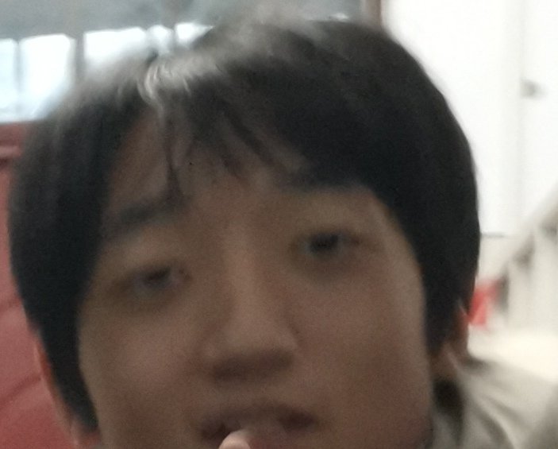

赵炎
赵炎(2011-2025年9月被处决),是二宁共和国的官员,曾帮助勾机夺取学校政权，并帮勾机建立了二宁共和国。
在成为二宁共和国官员后,他创立法西炎政权。
在创立了法西炎政权后,赵炎称自己是"希特炎",效仿希特勒进行改革。
当时，二宁共和国的经济非常烂,勾机虽然也在努力发展经济,但效果仍然不好。
赵炎(希特炎)认为财富都集中在老师的手里,而学生们每周的零花钱又非常的少，所以他做了一个大胆的决定。
他在教学楼的教室演讲:"老师们开小卖部能在学校里面卖零食，那么这些价格呢？一瓶200ml的牛奶就要5个亿，一碗胡辣汤就要9100万，就连买零食也要先开通，天价10个亿的VIP才能进行购买。成何体统？"
不久后，非常多的学生加入了赵炎，往教师老师们的宿舍进攻。他们砸掉了学校的小卖部，疯抢天价零食，并且还拿了一些基础教师物资，不服从的老师被当街处决，这就是惨绝人寰的二宁共和国建国之初的"大暴动"。
不久后，赵炎将从老师手里抢来的财富平均分给了学生们，学生们的人均财富值显著增高，人均GDP从80美元上升到了449美元，相当于每人3200元人民币的GDP财富。
越来越多的人开始参与法西炎政权。
由于越来越多的人参与了赵炎的活动，导致了勾机以为自己权利被架空，成了傀儡君主。于是，2025年9月28日，勾机怒气冲冲的勾机下令把赵炎处决，解散法西炎政权政党，并且还诛了他的九族。
在成为二宁共和国官员后,他创立法西炎政权。
法西炎政权
在创立了法西炎政权后,赵炎称自己是"希特炎",效仿希特勒进行改革。
当时，二宁共和国的经济非常烂,勾机虽然也在努力发展经济,但效果仍然不好。
赵炎(希特炎)认为财富都集中在老师的手里,而学生们每周的零花钱又非常的少，所以他做了一个大胆的决定。
二宁共和国暴动
他在教学楼的教室演讲:"老师们开小卖部能在学校里面卖零食，那么这些价格呢？一瓶200ml的牛奶就要5个亿，一碗胡辣汤就要9100万，就连买零食也要先开通，天价10个亿的VIP才能进行购买。成何体统？"
不久后，非常多的学生加入了赵炎，往教师老师们的宿舍进攻。他们砸掉了学校的小卖部，疯抢天价零食，并且还拿了一些基础教师物资，不服从的老师被当街处决，这就是惨绝人寰的二宁共和国建国之初的"大暴动"。
不久后，赵炎将从老师手里抢来的财富平均分给了学生们，学生们的人均财富值显著增高，人均GDP从80美元上升到了449美元，相当于每人3200元人民币的GDP财富。
越来越多的人开始参与法西炎政权。
结局
由于越来越多的人参与了赵炎的活动，导致了勾机以为自己权利被架空，成了傀儡君主。于是，2025年9月28日，勾机怒气冲冲的勾机下令把赵炎处决，解散法西炎政权政党，并且还诛了他的九族。